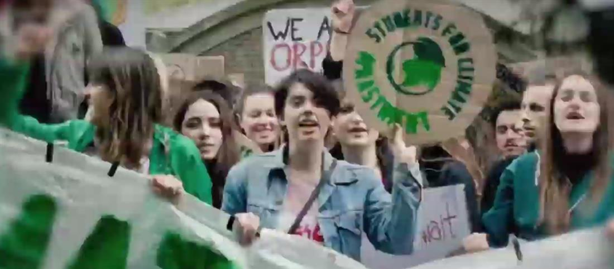
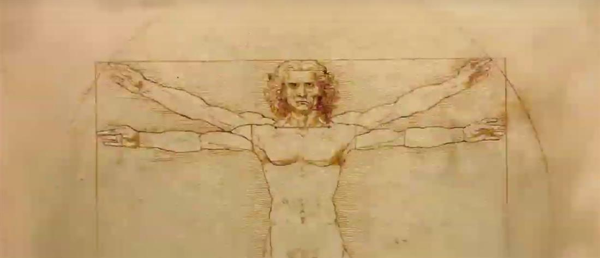
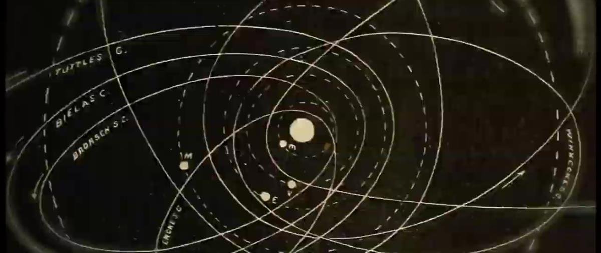

A film that asks viewers to take a minute to close your eyes and picture the future you want, featuring Pope Francis, Nobel prize winner Dr. Mario Molina, UN climate treaty negotiator Christiana Figueres, and Indigenous leaders Hindou Ibrahim and Benki Piyako.
Open your eyes
What's the world you want to see?
SOURCE: CONSERVATION INTERNATIONAL


